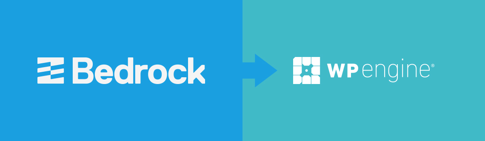

<!DOCTYPE html><html><head><meta charset=UTF-8 /><meta content="IE=edge,chrome=1" http-equiv=X-UA-Compatible /><meta content="width=device-width" name=viewport /><script>var host = "hellojason.net";
if ((host == window.location.host) && (window.location.protocol != "https:"))
  window.location.protocol = "https";</script><meta content="index,follow" name=robots /><link href="../../apple-touch-icon.png?v=Gvm449pRYq" rel=apple-touch-icon sizes=180x180 /><link href="../../favicon-32x32.png?v=Gvm449pRYq" rel=icon sizes=32x32 type="image/png"/><link href="../../favicon-16x16.png?v=Gvm449pRYq" rel=icon sizes=16x16 type="image/png"/><link href="/site.webmanifest?v=Gvm449pRYq" rel=manifest /><link color="#a432f4" href="../../safari-pinned-tab.svg?v=Gvm449pRYq" rel=mask-icon /><link href="../../favicon.ico?v=Gvm449pRYq" rel="shortcut icon"/><meta content="#a432f4" name=msapplication-TileColor /><meta content="#ffffff" name=theme-color /> <title>Hello Jason / Deploying Bedrock+Sage WordPress projects to WP Engine</title><meta content="Here's how you can develop WordPress sites onto Bedrock and deploy to the WP Engine hosting platform." name=description /><link href="../../assets/stylesheets/site-fa3f21a6.css" rel=stylesheet /><link href="https://hellojason.net//blog/deploying-bedrock-sage-wordpress-to-wp-engine/" rel=canonical /><script>(function(i,s,o,g,r,a,m){i['GoogleAnalyticsObject']=r;i[r]=i[r]||function(){
(i[r].q=i[r].q||[]).push(arguments)},i[r].l=1*new Date();a=s.createElement(o),
m=s.getElementsByTagName(o)[0];a.async=1;a.src=g;m.parentNode.insertBefore(a,m)
})(window,document,'script','//www.google-analytics.com/analytics.js','ga');

ga('create', 'UA-48926813-1', 'auto');
ga('send', 'pageview');
ga('set', 'anonymizeIp', true);</script></head><body class="blog blog_deploying-bedrock-sage-wordpress-to-wp-engine blog_deploying-bedrock-sage-wordpress-to-wp-engine_index"></body><header class=banner role=banner><div id=primary-navigation role=navigation><div class=navbar-header><a class=logo href="/" title="Hello Jason Portfolio"><svg id=hellojason-logo xmlns="http://www.w3.org/2000/svg" width="0.56in" height="0.56in" viewBox="0 0 40.6 40.6"><defs><style>.cls-1{fill:#fbac2d;}</style></defs><title>hello-jason-logo</title><path class=cls-1 d="M9.3,13.1a4.11,4.11,0,0,1,2.8-.7H29.9a4.42,4.42,0,0,1,2.9.7,3.39,3.39,0,0,1,.8,2.5v0.5H28.4A1.43,1.43,0,0,0,27,17.5v0.9q3.75,0,4.8.9c0.7,0.6.9,2.9,0.9,2.9a28.1,28.1,0,0,1,.1,2.9V29a1.43,1.43,0,0,1-1.4,1.4h-8A1.43,1.43,0,0,1,22,29V28.1c0-1.9.2-3.1,0.7-3.6a3.37,3.37,0,0,1,1.7-.6,1.42,1.42,0,0,0,1.4-1.2,1.33,1.33,0,0,0-1.4-1.1H16.9A1.43,1.43,0,0,0,15.5,23v0.7c1.6,0,2.7.2,3.2,0.7a5.14,5.14,0,0,1,.6,2.3,23.48,23.48,0,0,1,.1,2.6A1.33,1.33,0,0,1,18,30.4H11A1.43,1.43,0,0,1,9.6,29V23.5c0-2.2.3-3.5,0.8-4.1a4.15,4.15,0,0,1,1.8-.7,15.26,15.26,0,0,1,1.8-.1,1.23,1.23,0,0,0,.4-1.2A1.33,1.33,0,0,0,13,16.2H8.5V15.5a2.92,2.92,0,0,1,.8-2.4" transform="translate(-0.7 -0.7)"/><path class=cls-1 d="M21,3.4A17.6,17.6,0,1,1,3.4,21,17.63,17.63,0,0,1,21,3.4m0-2.7A20.3,20.3,0,1,0,41.3,21,20.31,20.31,0,0,0,21,.7h0Z" transform="translate(-0.7 -0.7)"/></svg><span class=tagline>Hello, I'm Jason.</span></a></div><div id=primary-container><ul class=nav><li class=nav-item-blog><a href='/'>Blog</a></li><li class=nav-item-projects><a href='/projects/'>Projects</a></li><li class=nav-item-about><a href='/about/'>About</a></li></ul></div></div><div class=container><h1 class=title>Deploying Bedrock+Sage WordPress projects to WP Engine</h1></div><svg class=icon-arrow-downright xmlns="http://www.w3.org/2000/svg" width="8.4" height="8.5" viewBox="0 0 8.4 8.5"><title>icon-arrow-downright</title><path d="M2.3,8.5,0,6.1H4.5L0,1.6,1.6,0,6.1,4.5V0L8.4,2.3V8.5Z"/></svg></header></html><article id=article-single role=main><time class=time datetime="2016-02-21 17:40:00 -0600" pubdate=pubdate>Published February 21, 2016</time><hr/><div class="alert alert-warning"> <p><strong>Update</strong>: v2 removes build process for Sage theme. Now focuses purely on deploying your Bedrock project, regardless of theme. Since each project will have a different build process for its theme, it makes more sense to focus solely on deploying to WP Engine. More info in <a href="https://github.com/hello-jason/bedrock-deploy-to-wpengine/issues/13">this issue</a>.</p> </div> <h2>Brief</h2> <p>This bash script prepares a WordPress project built on Roots&rsquo; <a href="https://roots.io/bedrock/">Bedrock</a> boilerplate with the <a href="https://roots.io/sage/">Sage</a> starter theme and deploys it <strong>to the WP Engine hosting platform</strong>. It can be easily modified if you do not use the Sage theme.</p> <ul> <li>Repo: <a href="https://github.com/hello-jason/bedrock-sage-deploy-to-wpengine">https://github.com/hello-jason/bedrock-sage-deploy-to-wpengine</a></li> <li>Demo: <a href="http://bedrocksage.wpengine.com/">http://bedrocksage.wpengine.com/</a></li> </ul> <h2>Purpose</h2> <p>WP Engine expects to see a standard WordPress project in the document root for your account. Since Bedrock shifts folders and files around a bit, this script temporarily moves everything back to their original locations (on a safe, temporary branch), which is then pushed to WP Engine.</p> <p>The result is a properly-versioned Bedrock repo that you can safely and repeatedly deploy to WP Engine&rsquo;s production and staging environments.</p> <h2>Installation &amp; Setup</h2> <h3>1. Grab the script</h3> <p>Source code is available at <a href="https://github.com/hello-jason/bedrock-sage-deploy-to-wpengine">https://github.com/hello-jason/bedrock-sage-deploy-to-wpengine</a>. This repo is not meant to be cloned into your project. Rather, just grab the <code>wpedeploy.sh</code> file and place it in the top-level directory of your Bedrock project, and keep it with your project&rsquo;s repo.</p> <h3>2. Setup git push</h3> <p>Follow <a href="https://wpengine.com/git/">these instructions from WP Engine</a> to setup SSH access and git push for your WP Engine account.</p> <p>This guide assumes your remotes are named as follows:</p> <ul> <li><strong>Production</strong>: wpeproduction</li> <li><strong>Staging</strong>: wpestaging</li> </ul> <h3>3. Set theme variable</h3> <p>Out the box, this script assumes your theme&rsquo;s name is <strong>sage</strong>. Open <code>wpdeploy.sh</code> and change the following variable (around line 17).</p> <ul> <li>Set <code>themeName</code> to the <strong>directory name</strong> of your theme (/app/themes/<strong>yourthemename</strong>)</li> </ul> <h3>4. Run script</h3> <p>In short, it performs a few checks, creates a temporary deployment branch, then builds the site <strong>locally</strong>. It force pushes to the specified environment using WP Engine&rsquo;s git push feature. When complete, it removes the temp branch and puts you back on the branch you started from.</p> <p>Run at the <strong>top level</strong> of your project, in the same directory as your <code>.env</code> and composer.json files. Replace each remote name with the ones you created during step 1. <strong>Note</strong>, running this script with the <code>bash</code> command is important; Ubuntu defaults to <code>dash</code> rather than <code>bash</code>, and the script will fail if you simply run <code>sh</code>.</p> <p>Deploy to staging:</p> <pre class="highlight plaintext"><code><table class="rouge-table"><tbody><tr><td class="rouge-gutter gl"><pre class="lineno">1
</pre></td><td class=rouge-code><pre>bash wpedeploy.sh wpestaging
</pre></td></tr></tbody></table> </code></pre> <p>Deploy to production:</p> <pre class="highlight plaintext"><code><table class="rouge-table"><tbody><tr><td class="rouge-gutter gl"><pre class="lineno">1
</pre></td><td class=rouge-code><pre>bash wpedeploy.sh wpeproduction
</pre></td></tr></tbody></table> </code></pre> <h2>FAQs</h2> <ul> <li><strong>What branch does it deploy?</strong> - Deploys the local branch you run it on to whichever WP Engine remote you specify (production or staging)</li> <li><strong>What about the uploads directory?</strong> - Completely ignores the uploads directory. You&rsquo;ll have to upload that separately <a href="https://wpengine.com/support/sftp/">via SFTP</a>.</li> <li><strong>How does it handle plugin versions?</strong> - You can upgrade or downgrade version numbers in the <code>composer.json</code> file, run <code>composer update</code>, then run this script to deploy the new version to WP Engine. However, this script <strong>will not delete</strong> plugins from WP Engine&rsquo;s servers; you will have to do that via SFTP.</li> <li><strong>What about WordPress core?</strong> - This script only deploys the contents of <code>wp-content</code>. You will manage WP core in WP Engine&rsquo;s interface.</li> </ul> <hr/><a class=back-to-articles href="/">&#8617; All articles</a><br/><br/></article><footer id=footer></footer><script src="//assets.codepen.io/assets/embed/ei.js" async=true></script>